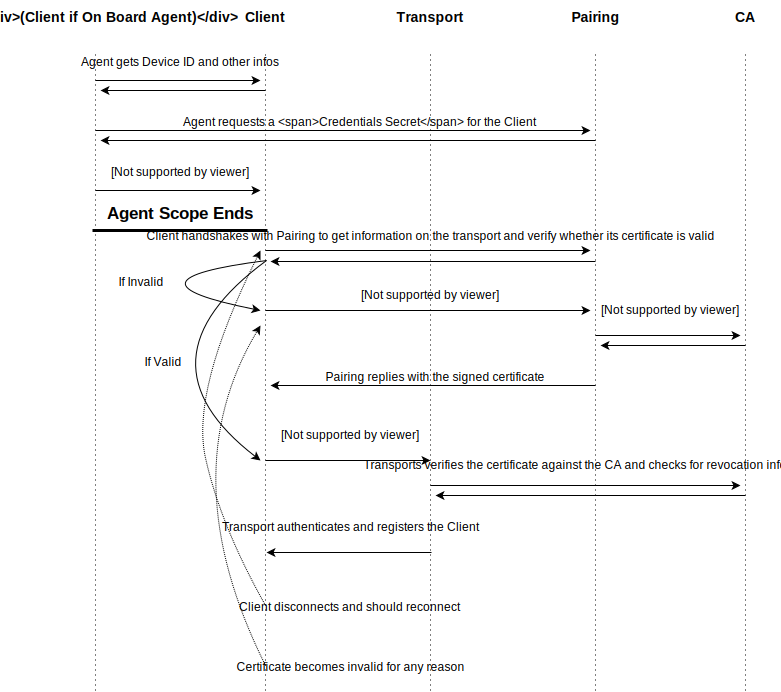

View Source Pairing Mechanism
Astarte's Pairing is a unified mechanism for Registering Devices and obtaining Transport Credentials. Even though in Astarte each Transport is free to choose its own Authentication mechanisms and Credentials autonomously, Pairing defines a well-known mechanism for Registering Devices and for orchestrating the exchange of Transport Credentials. Pairing is the main endpoint which orchestrates Device Authentication in Astarte, abstracting all details.
authentication-flow
Authentication flow
credentials-secret-vs-transport-credentials
Credentials Secret vs. Transport Credentials
Each device is identified by a Device ID and, on top of that, it has two different credentials directly associated to its ID: Credentials Secret and Transport Credentials. Credentials Secret is a shared secret between Astarte and a Device, which are used only to authenticate against Pairing API. Each device has a single Credentials Secret which remains valid throughout its whole lifecycle, and cannot be changed (unless operating manually).
Transport Credentials are Transport-specific credentials usually orchestrated by Pairing. Pairing emits these Credentials through a policy which is usually imposed by the Authority emitting the Credentials or by Pairing itself. They are designed to be transient, revokable and reasonably short-lived - however, the actual behavior and their lifecycle is entirely orchestrated by the Authority emitting them. The emission of Transport Credentials can be inhibited for a specific Device, you can read how to do that in the User Guide
Transports, by design, have no knowledge nor access to Credentials Secret, but have full authority over the authentication mechanism for devices. In fact, each Transport is free to choose the authentication mechanism which fits it best.
credentials-secret-storage-recommendations
Credentials Secret storage recommendations
As losing or disclosing a Credentials Secret might mean a device is compromised or requires manual intervention to be fixed and secured, storing it appropriately is critical.
Usually, when it comes to embedded devices, it is advised to store the Credentials Secret into an OTP, if available. Otherwise, storing it into the bootloader's variables is a viable and safe alternative. Other options might be having a separate, isolated storage containing Credentials Secret. In general, Astarte SDK does not provide a streamlined mechanism for retrieving Credentials Secret as the storage detail is strongly dependent on the target hardware - device developers should implement the safest strategy which better complies with their policies.
Tuning devices for security is out of the scope of this guide, however it is advised to make sure only Astarte SDK has access to Credentials Secret.
using-ssl-certificates-as-transport-credentials
Using SSL Certificates as Transport Credentials
Whenever possible, Transports are advised to implement their Authentication through the use of SSL certificates and a certificate authority by using Mutual Authentication, to ensure identities of the endpoint and the client are well-known to each other - this is especially the case with Astarte's MQTT Protocol on top of VerneMQ Transport.
In this case, Transport Credentials are a SSL Certificate, and Pairing will interact with a Certificate Authority. The certificate rotates depending on the emission policy of the CA and can be renewed and invalidated countless times over the device lifecycle. The Certificate is a transient, asymmetric, device-specific, non-critical Transport Credential which can be in turn used to authenticate against the chosen Transport.
In this case, Transports should have no knowledge nor access to secrets or Authorization details: they rather have to comply with the configured CA and the certificate parsing, as the Certificate contains all needed information for Authorization as well.
mutual-ssl-authentication-flow
Mutual SSL Authentication Flow

Side note: the Transport usually bears the public certificate of the CA, and actually interacts with the CA itself only if it exposes an OCSP endpoint and the Transport is capable of understanding it. In case the CA exposes a CRL, the Transport just makes sure to update its CRL from the CA every once in a while. In both cases, Transport's only interaction with the CA is the configuration of its SSL endpoint.
certificate-authority
Certificate Authority
Pairing is designed to interact with an abstract certificate authority, given this authority is capable of:
- Emitting SSL Certificates with a custom CN (this is important in the Transport authentication flow)
- Revoking emitted certificates and exposing CRL/OCSP revocation information
and is accessible from a 3rd party (e.g. from a REST API). By default, Astarte supports Cloudflare's CFSSL, and also provides a minimal installation in its default deploy scripts. For bigger installations, especially in terms of number of connected devices, it is strongly advised to use a dedicated CFSSL installation. Also, Astarte Enterprise provides a number of additional features including support for other external CAs.
certificate-flow
Certificate flow
During the Pairing flow, the device must generate autonomously a Certificate Signing Request (CSR) which will be in turn relayed by
Pairing to the configured Certificate Authority. Pairing will also provide the Certificate Authority
with a custom CN, which maps to <realm>/<device id>.
The CA must ensure the signed certificate carries this information, as it will be used by the Transport to authenticate the caller inside Astarte. Pairing, in fact, will also perform sanity checks over the signed certificate and reject it in case the CA fails to comply.
agents
Agents
Agents are realm-level entities capable of registering a device into Astarte. Agents are a core concept in the Pairing mechanism, as no Device can request its Transport Credentials nor be authenticated against any Transport unless an Agent previously gave its consent and delivered its Credentials Secret.
The recommended configuration includes an authenticated Agent in a trusted physical environment (e.g.: the distribution facility of the device) which guarantees an isolated and safe routine for generating Credentials Secret. However, such a setup might not always be possible, and Astarte's SDK has an On Board Agent concept to allow a simpler registration procedure.
on-board-agent
On Board Agent
In the On Board Agent use case, the device is preloaded with an Agent Key, a shared secret which is not tied to a specific Device in the realm. In fact, this secret is usually the same for all Devices in the same realm.
This secret will be used only once, upon the device's first interaction with Astarte (Registration), and can be safely discarded afterwards. This approach largely simplifies the deploy procedure, but leaves every device with a secret which, if retrieved, can allow an entity to register an arbitrary Device in the realm.
If following the On Board Agent approach, it is advised to store the Agent Key in a safe area inside the device and delete it after retrieving a Credentials Secret (some OTPs allow this configuration).
transport-responsibility
Transport responsibility
Once a device obtains its Transport Credentials, it is then capable of connecting to the Transport the credentials were forged for. Transports have full responsibility in terms of authenticating the client, reporting and relaying its connection state to Astarte via its internal AMQP API. As such, it is fundamental that 3rd parties implementing new Transports not only adhere to protocol specifications, but also make sure to implement the authentication procedure meticolously, as a vulnerable Transport acts as a single point of failure of the whole system, and is capable of bypassing the Pairing workflow entirely.
For this very reason, we encourage users to be extremely cautious when using 3rd party Transports which have not been verified and hardly tested, especially when it comes to the Client Authentication stage.
Even though there are valid use cases where Mutual Authentication is not usable, Transports are advised to stick to Mutual SSL Authentication where possible. This, among other benefits, allows to use Pairing's core features for handling SSL Certificates.
pairing-facilities
Pairing facilities
Pairing's Device API exposes two additional facilities: first and foremost an endpoint which bears a
set of information about both Pairing itself and Transports the device should use or choose from.
This endpoint is Device and Realm specific and can be found at
/{realm_name}/devices/{hw_id}.
This allows granting each Device a specific Transport configuration, which can be useful in
installations with more than a single Transport, and automates the configuration on the Device's
end, which knows in advance what is supported and how to access its Transport(s).
Moreover, each Transport implementation has a /verify endpoint where a client, authenticating with
its Credentials Secret, can verify whether its Transport Credentials are valid or not. This, in
case SSL is used, is especially useful for checking against revocation lists.